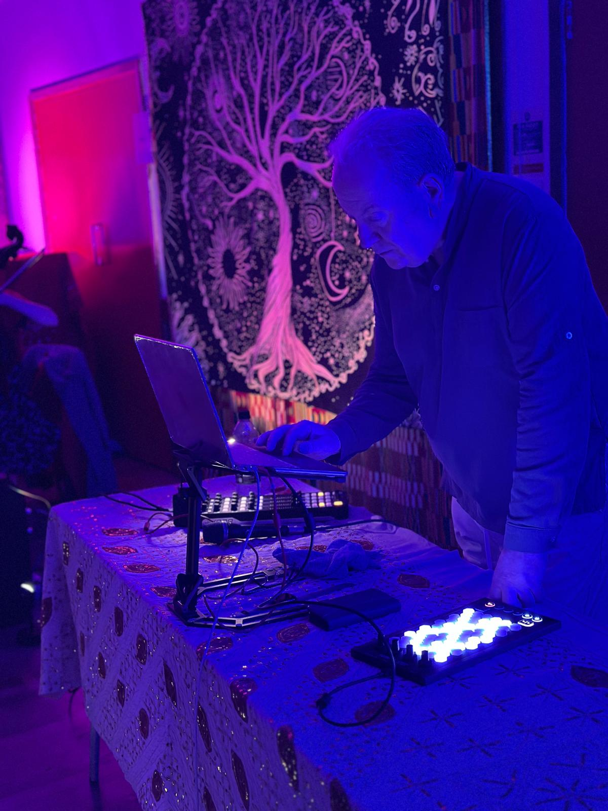

Artistic and Musical Explorations
Paul Smith was born in London in the 1960s. Paul is an accredited teacher of the 5Rhythms®. He is also a dancer and DJ with more than two decades of experience of conscious dance, improvising with percussion and electronic music. This website features various projects, none of which are ever "finished" but all represent some kind of activity along his artistic journey. See also https://5rhythmswithpaul.com and https://onlyforart.com.
Much current work is around a fruitful collaboration with Bela Emerson. Hopefully we can share some recordings of this soon. Bela is a highly experienced, skilled, and versatile improvising cellist. She uses her beautiful instrument's full sonic and emotional range to hold and build creative and connective space, for people to explore and be immersed in connected playfulness in the moment. See https://belaemerson.com/cello-movement/.
Paul and Bela are creating live and improvised music for 5Rhythms classes, and as a series of wholly improvised events called Movement Playspaces. These are a dynamic exploration of relationships and interactions between live music and embodied movement / dance. An improvisational experiment where we sonically co-create with the dancers in the space. We work with silence, with music, with movement and with stillness. The music is responsive, spacious, and attuned to the movement: multilayers of cello, live loops, percussion, electronics, and more. Everything is created live and in the moment - no pre-recorded tracks.